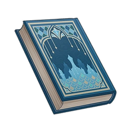

Sumeru · Books & Literature
A Thousand Nights
A six-volume Sumeru collection of nested folktales, reconstructed from Torn Pages. Its in-game description says an unnamed wandering researcher collected far more stories than the surviving fragments preserve.

The surviving collection
A Thousand Nights is a six-volume Sumeru book collection. Its item description says that an unnamed wandering researcher traveled through rainforest, desert, and city during a time of great catastrophe, gathering stories. The same description says the original work held countless tales and that only a fragment survives. It does not name the researcher or date the journey, so the wording should not be used to assign the collection to a particular historical person or event.
The six volumes are distinct folktales, not chapters in one continuous biography. Their plots move through dream worlds, desert encounters, scholarship, a ruined palace, and a romance sustained by talking birds. Several endings fold back into storytelling itself, making the surviving set feel deliberately incomplete and recursive.
Finding and reconstructing the volumes
Each volume is assembled from ten numbered Torn Pages found in the Sumeru desert. Volumes I, II, and III are scattered through the Desert of Hadramaveth. Volumes IV, V, and VI are found across the Land of Lower Setekh, Land of Upper Setekh, and Hypostyle Desert. The pages are an in-game recovery mechanic: the complete stories become readable after the Traveler gathers the pieces for each numbered volume.
This setup is part of the book’s subject. The player experiences the collection as fragments that must be put back together, while the book description itself says only fragments of a much larger original work remain. The game does not say that the Akademiya commissioned or archived the recovered volumes, nor does the collection identify a named editor.
Volume I: people without shadows
The first tale begins with an isolated people who cast no shadows and believe that all dreams have already been dreamed. After an adventurer tells one young person that shadows and dreams may be connected, he travels to a forest where dreams overlap. Unable to find a dream of his own, he discovers that he can enter the dreams of others.
A dream-captor teaches him how to move through dreams and warns him not to probe another dream repeatedly or speak the names of the dead. He breaks the taboo in pursuit of an answer. The ending returns to the pair by a brook: rather than explain everything, the dream-captor begins another tale. That unresolved turn makes the reader enter a story inside a story, and leaves the young man's identity and the dream-captor's past unstated.
Volume II: the Dastur and the desert mage
A Vahumana Dastur becomes lost in a sandstorm while exploring old desert ruins. A young mage with amber eyes rescues him and agrees to teach him. He benefits from her knowledge as he advances from Dastur to Herbad, Vahumana Sage, and finally Grand Sage, but repeatedly refuses her requests for help with her sister and displaced tribe.
When he threatens the mage, she sends him back to the beginning of the encounter at Caravan Ribat, where she again offers to tell him stories. The tale is a sharp story about ambition, reciprocity, institutional status, and a promise the scholar abandons once it stops serving him. Its magic and Akademiya offices belong to the folktale’s plot; the volume does not present this Dastur as a named historical Sage or identify the mage with a specific known character.
Volume III: the prince and the Sumpter Beast
The third story is set in a Port Ormos ruled by seafaring Deys. A prince wastes his inheritance, then accepts a bargain to care for a Sumpter Beast. After hearing the animal speak, he disobeys its keeper, frees it, and receives a hidden palace and a stream of luxuries. He soon becomes dissatisfied and asks where the gifts come from.
His servant reveals that the palace’s riches and pleasures were transformed from desert things and that the servant is a scarab. The illusion collapses, and the prince loses the wealth he had been given. The story uses repeated warnings and the prince’s curiosity to drive its reversal; it does not establish a literal history of Port Ormos, its Deys, or a real desert god.
Volume IV: the researcher’s wish
The researcher in this tale blames time and his colleagues for his lack of scholarly success. He wishes that time would be fair so he can write brilliant theses and leave a lasting name. An injured Jinni grants the wish, but the result is cruelly mismatched: the researcher’s thoughts race while his body, sight, writing, and speech slow to a crawl.
His intended masterpiece emerges only as disconnected fragments, and even speaking fails him. The narrator leaves open whether the being was truly a Jinni or a demon. The plot makes a comic and unsettling point about seeking permanence through scholarship while overlooking the physical limits that make expression possible; it does not describe a documented Akademiya case.
Volume V: the mirror palace
A young woman repeatedly dreams of a distant palace built around mirrors. A masked figure appears in the reflections, and the dreamer grows into a famous magician still compelled to find the kingdom and deliver a message she cannot fully explain. When she finally reaches it, the palace has been destroyed by fire for centuries.
Inside the ruined throne room, a surviving mirror shows the masked woman again. The figure confronts and stabs the magician, then reveals a face identical to her own. The story closes on a vision of a story being told back to oneself across dream, memory, and mirror. It does not name the kingdom or the two faces, so readers should resist treating the imagery as a confirmed account of a specific Sumeru figure or catastrophe.
Volume VI: the bird chaser
The final volume follows a young man conscripted into a long war and separated from the priestess he loves. She arranges for enchanted birds to carry her words to him. When he returns, he learns that she died soon after he left and that she had taught the birds enough to keep communicating with him. He spends old age chasing the birds, hoping to hear more from her.
The tale ends with the bird chaser asking the birds to speak about his beloved, followed by the suggestion that they will tell the story. That final image sends the collection back into narration, echoing the unfinished story at the end of Volume I. His belief that he can recover his love through the birds belongs to the character; the book does not confirm that her soul remains in them.
How to read the folktales as lore
The collection borrows names and settings that players recognize, including Vahumana, the Akademiya, Port Ormos, Deys, Jinni, and the Sumeru deserts. Those details give the folktales a Teyvat texture, but they do not turn every event into reliable history. Each volume uses its own storybook logic, and the text provides no author’s key mapping the characters to real people.
The safest lore reading keeps three levels separate: what the item description says about an unnamed collector and lost source; what each surviving tale says happens to its own characters; and what a reader may infer from recurring motifs such as mirrors, dreams, broken promises, and stories that repeat. The first two are in-game text. A specific allegory to King Deshret, Ay-Khanoum, the Cataclysm, or another named event remains unconfirmed unless another source makes that connection directly.
This is an original CoreGG reading guide, not an official HoYoverse article or a reproduction of the game text. Source links below identify the records used so you can check the original context.
Sources & references
Check these sources for the original game text and reference trail.